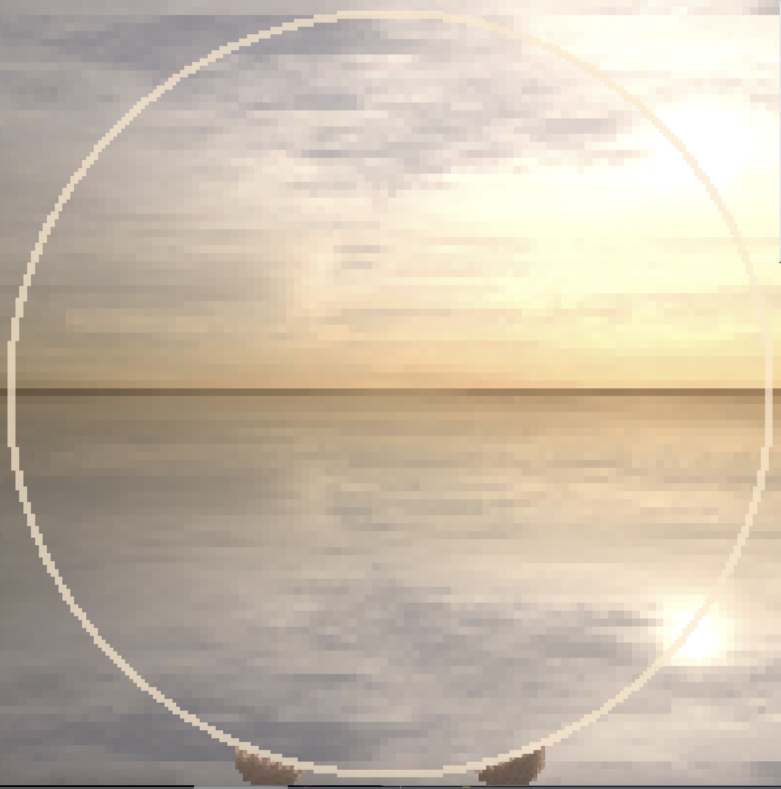

For assignment 1 in Interactive Media, I'm researching the
Orb Farm
website.
Question 1
Spend two minutes with the experience and list all of your actions in granular detail.
First, I noticed the circle in the centre of the webpage. Then I glanced at the control panel on the top
right.
I tried scrolling to see if there was anything else down the bottom, but nothing happened.
I randomly clicked inside the circle to see what would happen. Yellow pixel-like particles fall from
where I clicked.
I then clicked more times in the circle and tried to click and drag the mouse to add more. I saw the
particles fall and accumulated at the bottom of the circle. I realized it was an orb, and I could add
content inside it.
I looked at the control panel, trying to find more elements to put inside the orb. I quickly scanned the
panel. I noticed the "grass" button (the most familiar word for me) and clicked it.
I moved the cursor back inside the circle and tried to click and drag upward from the accumulated
particles, but the grass fall like particles instead of growing from the sand. I felt surprised and
clicked and drag the mouse left and right in the empty area of the circle to put in more grass.
I looked back to the panel to try other elements, and this time I noticed the "Wood" button and clicked
it. Then went back to the blank area of the orb to drag left and right while clicking.
However, the wood stayed where the cursor passed by instead of falling down as I imagined.
I was shocked and reflexively pressed ctrl+z on the keyboard to try to undo this step, but no response.
I quickly scanned the panel, trying to find the undo button.
Having not seen the "Undo" button, I tried the "Clear" button. I clicked on it, but nothing happened. I
clicked a few more times, hoping to see some change, but I didn't get any response.
I have no idea what to do, so just to try, I click inside the orb. Surprisingly, it erased the element!
I then quickly drag the mouse to clear those wood.
Suddenly, one part of the line of the orb close to the wood has been erased accidentally! I was shocked
again. Knowing that there isn't a undo button, I immediately went to the panel to look for elements that
would make up the orb. I noticed the "glass" button and clicked it.
Then going back to the orb, I drag while clicking to repair the glass that was accidentally wiped off.
Scanning the control panel again, I chose the "Water" button and clicked it. Returning to the orb, I
clicked and dragged and saw the water element falling like real liquid.
I loved the liquid effect, so I spent more time playing with it and added water three times.
Scanning the panel again, I noticed the round metre at the upper left with the pointer pointing to O2. I
then glanced at the orb and unexpectedly found that the grass was growing. I gradually realized that
this is a digital ecosystem orb.
I wanted to control the pointer, so I scanned the panel again. Trying to find the element I thought
would reduce the O2, I noticed the"Fish" button and clicked.
I clicked and dragged in the water inside the orb, but only one fish appeared from where I clicked
instead of bringing up a lot offish as I imagined.
I tried the action again, but again, only one fish appeared. So I had to quickly click many times to add
more fish to the orb.
I looked at the round metre. The pointer was moving very slowly. I wanted to see a big change, so I
scanned the panel and clicked the"Daphnia" button I hadn't used yet. Then I clicked and dragged inside
the orb while watching the round metre.
I also tried the other two buttons: "Algae" and "Bacteria", and added them to the orb. My eyes are
constantly on the round metre.
No matter adding what element, the pointer was still moving slowly. I was tired and shifted my focus to
the background and stared at it for a while (about 10s). I saw the background gradually change from
light to dim, like day and night.
I scanned the panel again and noticed a button looks like the fast forward icon and clicked it. I saw
everything suddenly speed up, including the background and the animation of different elements. I looked
at the round metre and found that the pointer changed faster!
I stared at the metre for a while (about 10s). The pointer rotated left and right.
I'm curious about the relationship between different elements and how to use them to balance CO2 and O2.
So I scanned the panel again for something like the introduction to this website and I found the "Info"
button and clicked it.
A window popped up. I first noticed the title: "Welcome to the orb.farm!". Then two pink things at the
bottom of the window caught my attention. I clicked them several times, but nothing happened.
I lost interest in the two pink things and looked up to the top of the window. Scanning all the
headings, I started reading the text from the beginning. I had to click the "plus" icon next to the
heading to expand the content. And then, I need to scroll down to see more text. I repeated that process
until I tried to scroll down again but it didn't work. I knew I had read all of them.
I then scrolled back to the beginning. Confirming that I had read all the information, I clicked the "x"
icon in the top right of the window to exit.
I learned the rule and relationships between each element through the window. Looking at my filled orb,
I wanted to restart the game.
I looked at the panel and noticed the "Reset" button. After clicking the button, a notification popped
up. I read the prompt and clicked the "OK" button to restart my ecosystem. Then, the webpage returned to
its default state, and the empty circle appeared again
Question 2
What was the first thing you paid attention to when interacting with the experience?
The first thing I noticed was the empty orb in the centre of the webpage, as shown in the image.

Question 3
What did you spend the most time engaging with?
The part I spend the most time engaging with is that glass orb. I've been adding different elements to it in
order to build the whole digital ecosystem to achieve a balance between O2 and CO2.
Question 4
What was the most common action in your two minute interaction with the experience?
The most common action is clicking and dragging the mouse left and right to arrange different elements in the
orb while keep looking at the metre to get a response.
Question 5
What is your impression of the intended primary goal of the interactive experience?
In my opinion, the intended primary goal of this website is to encourage understanding of ecosystems and experience
the beauty of nature.
Question 6
How does the experience communicate it's primary goal?
Through animation.
These animations simulate the physics (such as gravity, liquid flow, accumulation) and natural
characteristics (such as grass growing, fish swimming, day and night switching) and biological chain
relationships (such as daphnia eat algae, fish eat daphnia, grasses absorb nutrients from the sand) of these
creatures, materials, the environment.
These movements catch my eyes and keep me watching and exploring. These animations give me an immersive 3D
experience with the 2D website.
Moreover, this digital ecosystem orb operates much faster than the real-world ecosystem. It turns the
long-term changes in nature into a short period experience. Additionally, the animation of the round metre
visualizes the amount of oxygen and carbon dioxide that are invisible to our human eyes. Being able to
observe changes quickly allows me not to lose patience and appreciate the beauty of the ecosystem.
In addition, the animation of the mouse interaction (such as adding and clearing materials, and arranging
plants and animals) enabled me to do things that were hard to do in my life: control, experiment, and build
my own digital mini-aquarium. These animations simplify the process of creating an ecosystem, which I won't
get bored. Also, they stimulated my desire for control and achievement, so I really like playing with this
website.
Question 7
What is your impression of the intended length of a single interaction and how often you are intended to interact with the experience?
First of all, I have to admit that the first interactive experience took me more than two minutes. I think
the reason is that the beautiful visuals and interesting interactions draw me to play directly instead of
learning how to play. It is really fascinating to observe the process of simulating an ecosystem, and
it is very engaging to explore how to achieve ecological balance. I spent most of my time exploring all
those things.
The unguided operation took a lot of time. However, I guess that this is the intended goal of the website: to
guide me to explore this easy-to-understand game by myself and to encourage me to understand the rules and
learn more about the ecosystem. I feel like if this website tell me the rules of
the game and how to succeed at the beginning, I might try to play, but I will quickly
lose interest. I can probably gain some knowledge, but may not feel the charm of the ecology.
Question 8
What metaphor or metaphors does the experience's mental model reference?
First, the website references mental models from scientific laws of nature (physics and biology).
For example, the buoyancy, swimming fish, water that flows like a liquid, accumulation of granular
sand, growing grass, alternation of day and night...
The website references a mental model from our sense of space.
For example, empty and full, filling, placing, clearing...
It also uses skeuomorphism.
For example, the round metre, buttons...
It also references some past experiences of interaction with websites as a mental model.
For example, the control panel, the "x" button that means closing the window, the fast forward
button, the cursor changes from an arrow to a hand...
Question 9
What does this reference suggest about how you should feel and/or act when engaging with it?
The scientific laws of nature: let me imagine the ecosystem as the rule of the game.
Physics:
Simulating the gravity, colours, shapes, and movements of real-life materials and creatures allows
me to use my existing knowledge of real-world physical relationships to arrange those elements. In
addition, the background colour transmits from behind simulates the transparency of the glass,
implying its material.
Creatures:
The biological chain relationship is symbolized by increasing and decreasing the amount of each element. It
implies that I should use the ecosystem as a rule for understanding and interacting with the
website.
Nature:
Simulating day and night through changes in colour, shape, and light allows me to understand it as a
time change for this website. I should consider that when interacting with it.
Direct spatial experience: gives me the sense of dimension and let me consider the 2D circle as a 3D orb.
An empty container:
The sense of space helps me imagine the initial circle of the web page as an empty container. I
could feel the circle that occupies most of the webpage hints at something I could try: fill it with
content. It implies some possible interactions to me.
Depth:
The background visual and the shades of colour of various elements show the effect of light, thus revealing depth. This hints that I can think of it as a three-dimensional space, which enhancing a more immersive experience for a 2D web page.
Skeuomorphic design: helps me make associations with real-world objects.
Round metre:
In reality, we often use a metre to represent objects invisible things or things that cannot be
measured by the eye (such as gas). This website also simulates a round metre to measure oxygen and
carbon dioxide. It responds to my actions, which implies that I need to refer to this response when
interacting with it.
Panels and buttons:
It uses shades of colour to simulate real-world buttons, implying that I can "press it", which means
clicking on it.
Past experience: allows me to quickly understand new things with old knowledge.
Classic icons:
The three icons in the top right of the panel are classic icons on the computer, implying that I can
hide, make full screen, and close the panel. The fast-forward icon composed of two triangles is also very
classic, implying some possible speed change.
Cursor:
The cursor changing from an arrow to a little hand is a classic hint that there is something to
interact with.
Question 10
What is the most frustrating element of the interaction and what makes it frustrating to you?
Although many aspects of this website surprised me a lot, the most frustrating
experience for me is not being able to undo!
It is fascinating that the website allows you to explore by yourself instead of showing you the rules at the
beginning. However, more mistakes, such as some of the unexpected issues mentioned above in Question 1 (adding wood and fish, accidentally clearing the line of the orb, etc.) will be made in the absence
of hints.
As far as I concern, based on my past experience, most of the digital products I have used, especially
software and games, allow me to undo at least one previous step. So, personally, I consider "undo" as one of
the best and the most necessary features of all digital products. Clear and reset didn't help me when I accidentally wiped the line of
the orb. I was shocked when the mini-aquarium I made painstakingly was destroyed and all the materials in
the orb started to leak out. The irremediable feeling is extremely frustrating to me.
Question 11
What is the most satisfying element of the interaction and what makes it satisfying to you?
The most satisfying interactive experience for me is using the fast-forward button.
I was getting bored when I couldn't see a pronounced change in the round metre no matter how hard I tried.
However, the fast-forward function allows me to see feedback faster. When I turn on that acceleration, I can
see things in the orb move faster. The pronounced change in elements' reductions and increases gave me a
clear view of the food chain relationships and their impact on the round metre. This makes me understand
that my actions are effective. The quick feedback process makes me patient and willing to continue playing.